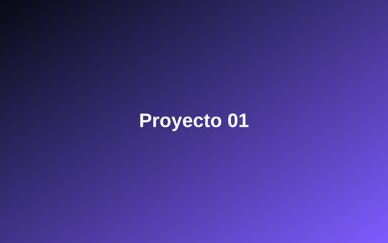
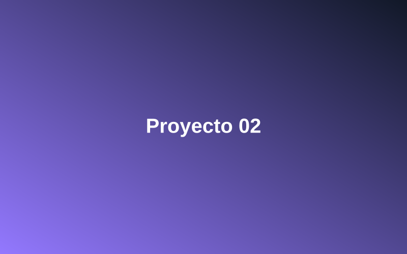
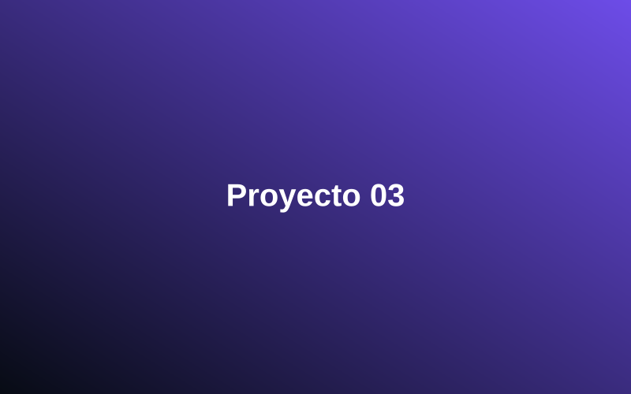
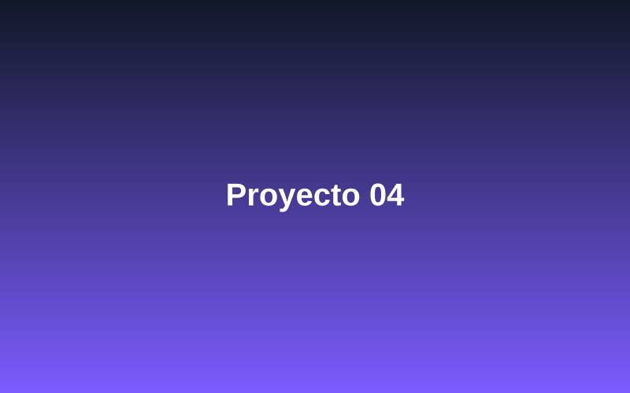
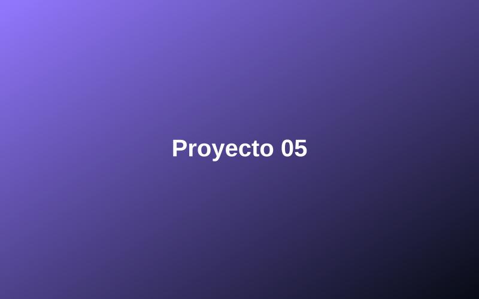
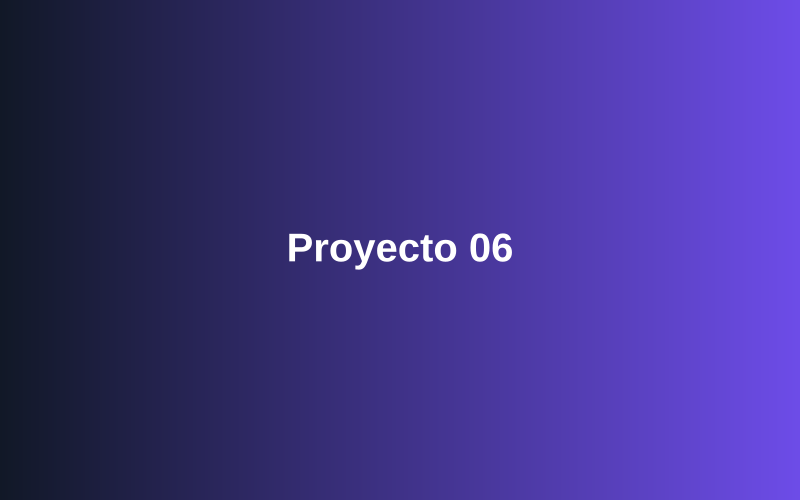

Gestor de Inventario
Aplicación backend en Java y Spring Boot para controlar el stock de un almacén, con alertas automáticas de reposición y trazabilidad de movimientos.

Creo aplicaciones diseñadas para gestionar los procesos internos de una empresa. Automatizo tareas empresariales como la gestión de procesos, el tratamiento de datos, la coordinación de operaciones y la aplicación de reglas de negocio, siguiendo una estructura modular basada en capas y una arquitectura de microservicios.
I develop applications designed to manage a company's internal processes. I automate business tasks such as process management, data processing, operations coordination and the enforcement of business rules, following a modular layered structure and a microservices architecture.
Desarrollo aplicaciones backend estructuradas en capas, trabajando con lógica de negocio, gestión y persistencia de datos, APIs e integración con servicios externos.
Con más de 3 años de formación y experiencia práctica en el desarrollo backend, he orientado mi recorrido hacia la creación de aplicaciones escalables para la gestión interna de empresas, especialmente en áreas como la automatización de procesos, el registro y persistencia de información, la organización de datos y la generación de informes.
Mi lenguaje principal es Java, que utilizo junto con Spring Boot para desarrollar aplicaciones backend, servicios y APIs REST. Trabajo con Hibernate como ORM para gestionar la persistencia y el acceso a datos dentro de las aplicaciones.
En bases de datos trabajo principalmente con MySQL dentro del ecosistema SQL y con MongoDB cuando el proyecto requiere un enfoque NoSQL. También estoy familiarizado con el consumo, diseño y documentación de APIs, utilizando principalmente Postman.
En el desarrollo de automatizaciones utilizo Python para implementar procesos deterministas, donde la lógica, las reglas y los resultados deben ser completamente controlables y reproducibles. Trabajo con n8n como capa de orquestación, encargada de conectar sistemas, APIs y servicios, coordinar tareas y dirigir el flujo completo del proceso. Cuando se requiere interpretación, razonamiento o toma de decisiones sobre información no estructurada, incorporo modelos de inteligencia artificial como Claude, que actúan como la capa cognitiva o “cerebro” del sistema, mientras n8n coordina la ejecución y Python resuelve la lógica determinista cuando es necesario.
Para el desarrollo de interfaces trabajo con React, principalmente en aplicaciones web que necesitan complementar el backend con una interfaz gráfica.
En el control de versiones utilizo Git y GitHub, y para testing en Java trabajo con JUnit. Actualmente también estoy ampliando mis conocimientos en servicios cloud, especialmente dentro de Amazon Web Services (AWS).
Antes de empezar a desarrollar, intento entender cómo debe funcionar el sistema completo: qué información recibe, qué validaciones necesita, qué operaciones debe ejecutar, dónde se almacenan los datos y qué otros servicios intervienen. A partir de ahí divido el backend en componentes y responsabilidades antes de implementar cada parte.
Organizo principalmente mis proyectos mediante una arquitectura por capas, separando controladores, servicios, acceso a datos y comunicación con sistemas externos. Dependiendo del tipo de aplicación, también trabajo con estructuras MVC y enfoques modulares, buscando que cada parte del sistema tenga una responsabilidad clara y pueda evolucionar sin afectar innecesariamente al resto.
En proyectos de mayor tamaño también trabajo con enfoques como la arquitectura de microservicios y la arquitectura hexagonal, especialmente en aplicaciones desarrolladas con Spring Boot, separando responsabilidades y evitando que la lógica principal quede demasiado ligada a la infraestructura o a servicios externos. Durante el desarrollo avanzo de forma incremental, probando cada componente antes de integrarlo con el resto de la aplicación.
1. Gestor de licencias — Novacenter del Sur.
Desarrollé en Java una aplicación de escritorio con interfaz
gráfica para gestionar el enorme volumen de licencias de los
clientes de Novacenter del Sur, empresa de soporte del programa
TeoWin. El programa consulta, busca, inserta y organiza los
ficheros .ddl que antes se guardaban de forma dispersa en el
ordenador, asociando cada licencia con el nombre y los datos del
cliente correspondiente mediante una base de datos, lo que
agilizó su localización y mantenimiento diario.
2. Flor de Tuna — Desarrollo web para restaurante.
Diseño y desarrollo de una web corporativa para restaurante
orientada a captación y conversión de clientes, con una
estructura multipágina (carta, reservas, galería y contacto) y un
diseño responsive centrado en la experiencia de usuario. Apliqué
buenas prácticas de SEO técnico —HTML semántico y estructura
optimizada para indexación— y optimicé el rendimiento siguiendo
métricas Core Web Vitals, dejando el proyecto preparado como
plantilla reutilizable para futuros clientes.
Ver sitio web
3. Gestor de pedidos y albaranes — Hotel Iberostar.
Herramienta desarrollada en Python para automatizar la
sincronización de movimientos de mercancía entre el Excel central
de Economato y los Excel mensuales de stock de cada punto de
venta del hotel. El sistema detecta automáticamente el punto de
venta y la hoja correcta, agrupa los productos por fecha y
actualiza el Excel correspondiente, creando productos y
plantillas nuevas cuando hace falta —con copias de seguridad
automáticas y guardado seguro antes de tocar cualquier archivo—,
eliminando el cuadre manual de stock cada mes.
Busco seguir sumando experiencia en proyectos reales, conocer distintos entornos de trabajo y convertir ese aprendizaje en nuevas oportunidades profesionales, colaboraciones y software que pueda demostrar fuera del código.
I develop layered backend applications, working with business logic, data management and persistence, APIs, and integration with external services.
With more than 3 years of training and hands-on experience in backend development, I have focused my path on building scalable applications for internal company management, especially in areas such as process automation, information recording and persistence, data organization and report generation.
My main programming language is Java, which I use together with Spring Boot to develop backend applications, services, and REST APIs. I work with Hibernate as an ORM to manage data persistence and access within applications.
For databases, I mainly work with MySQL within the SQL ecosystem and with MongoDB when a project requires a NoSQL approach. I am also familiar with API consumption, design, and documentation, mainly using Postman.
When building automations I use Python to implement deterministic processes, where the logic, the rules and the results must be fully controllable and reproducible. I work with n8n as the orchestration layer, responsible for connecting systems, APIs and services, coordinating tasks and directing the entire process flow. When interpretation, reasoning or decision-making over unstructured information is required, I bring in artificial intelligence models such as Claude, which act as the cognitive layer or “brain” of the system, while n8n coordinates the execution and Python handles the deterministic logic when needed.
For interface development, I work with React, mainly in web applications that need to complement the backend with a graphical interface.
For version control, I use Git and GitHub, and for testing in Java I work with JUnit. I am currently also expanding my knowledge of cloud services, especially within Amazon Web Services (AWS).
Before I start developing, I try to understand how the whole system should work: what information it receives, what validations it needs, what operations it must run, where the data is stored and which other services are involved. From there I divide the backend into components and responsibilities before implementing each part.
I mainly organize my projects using a layered architecture, separating controllers, services, data access and communication with external systems. Depending on the type of application, I also work with MVC structures and modular approaches, aiming for each part of the system to have a clear responsibility and to evolve without unnecessarily affecting the rest.
On larger projects I also work with approaches such as microservices architecture and hexagonal architecture, especially in applications built with Spring Boot, separating responsibilities and preventing the core logic from becoming too tied to infrastructure or external services. During development I progress incrementally, testing each component before integrating it with the rest of the application.
1. License Manager — Novacenter del Sur.
I developed a Java desktop application with a graphical interface
to manage the huge volume of licenses belonging to Novacenter del
Sur's clients, a support company for the TeoWin software. The
program queries, searches, inserts and organizes the .ddl files
that used to be scattered across the computer, linking each
license to the corresponding client's name and details through a
database, which sped up daily lookup and maintenance.
2. Flor de Tuna — Restaurant Website Development.
Design and development of a corporate website for a restaurant
aimed at attracting and converting customers, with a multi-page
structure (menu, reservations, gallery and contact) and a
responsive design focused on user experience. I applied technical
SEO best practices —semantic HTML and a structure optimized for
indexing— and optimized performance following Core Web Vitals
metrics, leaving the project ready as a reusable template for
future clients.
View website
3. Order and Delivery Note Manager — Hotel Iberostar.
A tool developed in Python to automate the synchronization of
merchandise movements between the central Storeroom (Economato)
Excel file and the monthly stock Excel files for each of the
hotel's points of sale. The system automatically detects the
point of sale and the correct sheet, groups products by date and
updates the corresponding Excel file, creating new products and
templates when needed —with automatic backups and safe saving
before touching any file—, eliminating the manual monthly stock
reconciliation.
I want to keep gaining experience on real projects, get to know different working environments and turn that learning into new professional opportunities, collaborations and software I can show beyond the code.
Una selección de aplicaciones backend, automatizaciones e interfaces que he desarrollado.

Aplicación backend en Java y Spring Boot para controlar el stock de un almacén, con alertas automáticas de reposición y trazabilidad de movimientos.

API REST para gestionar reservas de un restaurante, con validación de disponibilidad en tiempo real y persistencia en MySQL.

Panel web en React conectado a un backend en Spring Boot para visualizar indicadores de negocio y generar informes automáticos.

Flujo construido con n8n y Python para sincronizar pedidos entre distintos sistemas, eliminando el trabajo manual repetitivo.

Aplicación de escritorio en Java para generar y organizar facturas de clientes, con base de datos local y copias de seguridad automáticas.

Sistema web para gestionar incidencias internas de una empresa, con roles de usuario, estados de seguimiento y notificaciones por email.
A selection of backend applications, automations and interfaces I've built to solve real problems.
Backend application built with Java and Spring Boot to control warehouse stock, with automatic restocking alerts and full movement tracking.
REST API to manage restaurant reservations, with real-time availability checks and MySQL persistence.
React web panel connected to a Spring Boot backend to visualize business indicators and generate automatic reports.
Workflow built with n8n and Python to sync orders across different systems, removing repetitive manual work.
Java desktop application to generate and organize client invoices, with a local database and automatic backups.
Web system to manage a company's internal support tickets, with user roles, tracking statuses and email notifications.